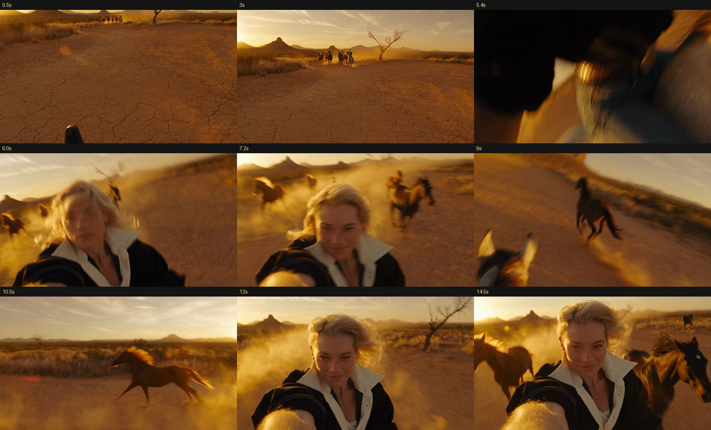
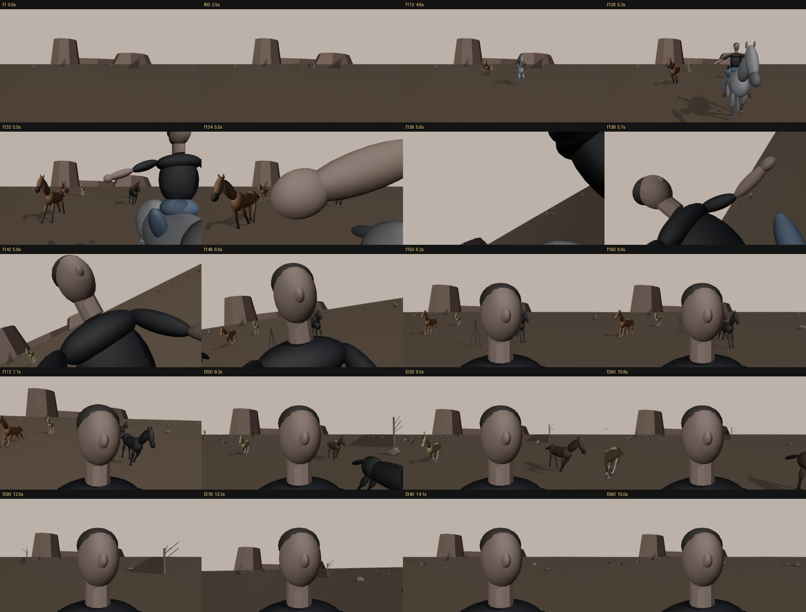
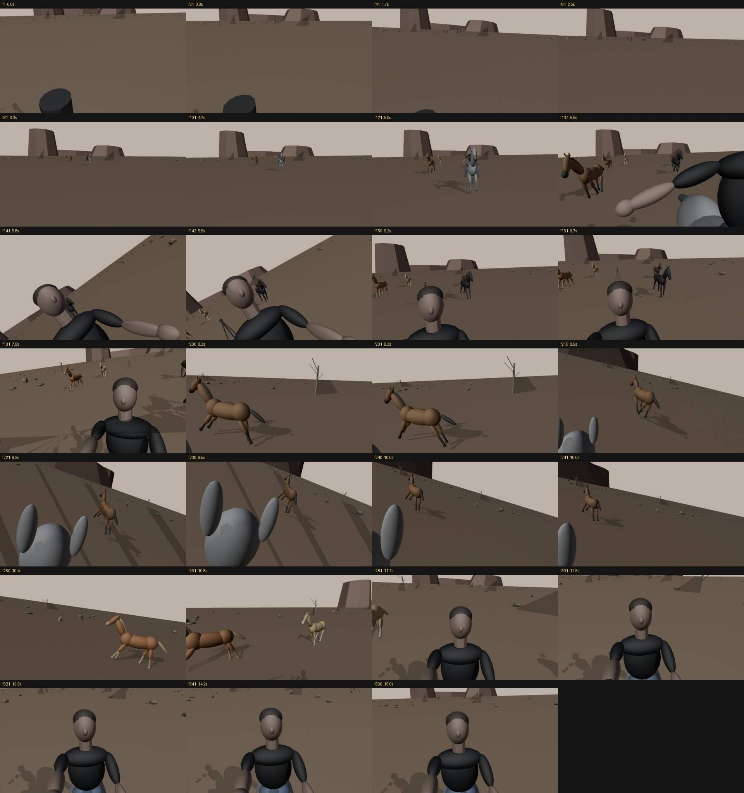
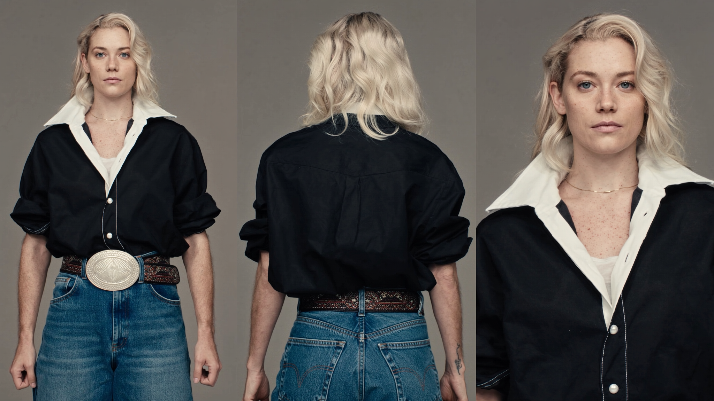
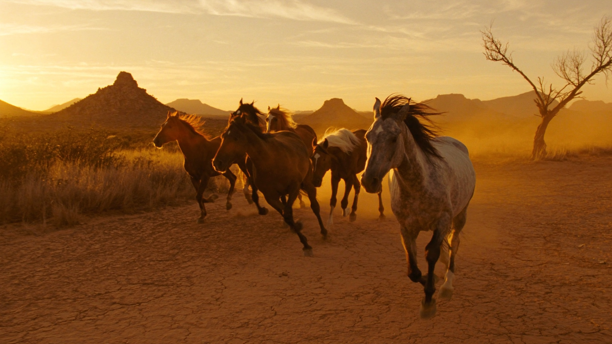

A 15-second single take: I gallop toward a camera on a tripod, grab it, and keep filming myself while a herd of loose horses overtakes me. No cut. The camera move was performed on an iPhone inside a grey Blender blockout, then Higgsfield's Seedance 2.5 painted the film on top of it.
Recreating the horse reel from Dodas Jagušák's “The advanced 3D AI workflow” to learn the pipeline end to end. Same shot, same beats, my own camera take, me as the rider.
Left is what Seedance 2.5 rendered. Right is the grey Blender playblast it was given as its camera reference: same camera, same timing, same beats. Press “Play both” to run them in sync.

Text prompts describe a shot; they don't control it. A Blender blockout gives the model something it actually obeys: a real camera path, real timing and real staging, recorded by hand rather than typed.
An iPhone running VirtuCam is the camera operator. Every tilt, shake and over-correction is a human move, recorded in one take.
A grey desert with horses, a rider, a tripod and mesas at real scale and real gallop speed. The phone drives one camera in that scene.
Takes the Blender playblast as its camera and layout reference, plus two stills for the look and the rider, and renders the film.
Installed the Higgsfield Blender add-on (drag the signed .zip onto Blender, sign in) and the VirtuCam add-on for Blender 5.2 plus the iPhone app. In Claude, added two custom connectors: Higgsfield (generation) and Higgsfield Bridge (the cable into Blender).
Then a connection test: Claude dropped a grey test horse at the origin, rendered a frame and checked it. If that appears, everything is wired.
One brief: a flat dusty desert plain with mesas, rocks, scrub and dead trees, and a low warm sun. A camera on a tripod. A rider on a dapple-grey galloping straight at it, grabbing it and filming herself while five loose horses overtake. 15 s, 24 fps, 20mm lens, real units.
Claude built it in a new scene: a 1.6 m horse, a ~45 km/h gallop (0.47 m per frame), legs, neck, body bob and tail all running on drivers with one gait switch per horse, and a herd staggered 24–38 m behind so each horse overtakes at a different moment (frames 172 → 318). Timeline markers for every beat: tripod · reach (112) · GRAB (134) · selfie hold (150) · first horse passes · last horse · end (360).
The trick of the shot is that it's one camera, not two with a cut. It starts on the tripod, and from frame 134 to 137 it blends into the rider's hand. Its parent only ever copies position, never rotation, so the phone's rotation always sits cleanly on top and VirtuCam doesn't flip the view on connect.
A second helper carries the rotation “level phone → looking at her face”, faded in on the grab. Result: hold the phone level before the grab and you get the opening frame; hold it level after the grab and you get a selfie. Claude checked it numerically: no position jump through the grab, 0° aim error on the face from the selfie hold to the end.
Every change came back as a contact sheet rendered from the shot camera. The first one showed the selfie camera sitting on the line of the arm, so the sleeve filled the frame. That got fixed, and the tripod was raised to hand height (1.93 m).

Selected CAM_main, connected VirtuCam, held the phone level to check the opening frame, then played the timeline and performed the whole 15 seconds in one take. It was nearly still for the approach, then I moved like someone on a galloping horse after the grab, swung around to look at the herd running ahead, and came back to the face.
Take 1 missed the turn to the herd; take 2 got it (8.3–10.2 s). The prompt timecodes were rewritten to match my take rather than the original's.

1920×1080 at 100%, H.264, 360 frames, with solid shading in the horses' colours and a light warm sky (a dark default viewport sky could push the model toward dusk). This MP4 is the most important file in the workflow; Seedance copies it beat for beat.
Image 1: a three-panel character sheet from one selfie (headless front, back, face plate) on flat 18% grey with no lighting baked in. Image 2: one golden-hour still that carries the horses, the location, the light, the haze and the grain.
Cinema Studio 4.0 (Seedance 2.5 under the hood): Single shot · 8mm Film · Playtime palette · Lighting Auto · 16:9 · 15 s · audio on. References in order: Image 1, Image 2, Video 1.
Fewer references, less to misread. The playblast carries the camera; these carry everything else.


All three prompts are adapted from the ones published in the original guide. Out of respect for the author's work, this page doesn't republish his full prompts. It shows the settings and every part we rewrote. Grab the base prompts from his page (sections 04 and 05) and apply these changes.
Base: the guide's character sheet prompt. Changes: “man” → “woman” throughout, the stubble line removed, the hair and identity lines below swapped in, and “no glasses” added. His outfit and every panel and lighting instruction were kept word for word.
The woman is the character from the attached reference — same face, same eyes, same skin, same freckles, same hair, same build in every panel. She is styled as a modern cowgirl with a 1980s register. Shoulder-length wavy platinum-blonde hair with natural silver-grey at the roots and crown, loose and slightly wind-tousled, no hat, no glasses. […outfit paragraph unchanged…] No sunglasses, no glasses, no hat, no other accessories. CENTER PANEL — […] The wavy platinum-blonde hair with silver roots from behind, […] RIGHT PANEL — […] Hairline, brows, lashes, freckles, lip texture, skin detail, […]
Unchanged: the guide's “horses still” prompt exactly as published.
Base: the guide's Seedance prompt. LOOK, NOTHING IN THE FOREGROUND, PHYSICS, AUDIO and the negatives were kept (pronouns switched to her). The blocks below were rewritten for my rider and re-timed to my phone take. That's the point of the markers: the ACTION timecodes follow your Blender take, not the original.
0.0–5.6s the viewpoint stands at head height above the plain, handheld but nearly still, tilted slightly down toward the ground, small drifts following the rider. 5.6–6.6s the grab. 6.6–15.0s the viewpoint is in the rider's right hand at arm's length, pointed back at her face, shaking and bouncing with every stride of the horse and every move of her arm, exactly like [Video 1].
THE GRAB — CRITICAL, no cut: at 5.6s her right hand reaches in from screen-right toward the lens, then in one unbroken motion the viewpoint is pulled up and swung around — half a second of motion-blurred tilted dirt, sky, sun glow and black sleeve whipping past as the arm turns the lens back toward her — and her face slides into frame and settles at arm's length by 6.6s, the abandoned tripod visible far behind her. One physical move from the fixed position into the hand.
[Image 1] = the rider. Same woman, same face, freckles, shoulder-length wavy platinum-blonde hair with silver-grey roots, black western shirt with white pearl snaps and piped yokes, white t-shirt, gold chain, blue jeans, tooled leather belt with brass buckle, brown boots. No hat, no glasses, no sunglasses. She rides the dapple-gray horse bareback — no saddle, no bridle, no reins — left hand in the mane, right hand free. HER HAIR IS IN THE WIND the whole time: at a gallop the headwind pushes her hair back off her face and shoulders, waves and loose strands lifting, whipping and flicking with every stride, never neat, never still.
ACTION: 0–3s the rider on the gray gallops straight toward the lens from the distance beneath the mesas, the other five horses loose 20–40 metres behind her, dust streaming. 3–5.6s she closes fast, slightly toward screen-right, eyes on the lens, right arm reaching out, hair blown back by the headwind. 5.6–6.6s the grab. 6.6–8.3s her face and shoulders at arm's length, the loose horses closing in behind her, frame bouncing and tilting; hair whipping back in the wind, strands flicking across her face, shirt collar fluttering; eyes narrowed against the sun and wind, a small confident smile — no wide grin, no blank stare. 7.1s the first loose horse draws level beside her. 8.3–10.3s the camera swings around to look ahead past her horse: the loose horses running ahead across the plain toward the big hill on the horizon, her own gray horse's ears and mane in the lower frame, dust and the low sun. 10.3–10.8s the camera swings back to her face. 10.8–15s her face at arm's length, hair still blowing, smile held, the last loose horses overtaking close on both sides and pulling ahead, glancing at the horses and back to the lens.
A dark shape still appears at the bottom of the first second. Keep the phone higher during the approach, and remove or hide every bit of tripod near the lens before the playblast.
The character sheet is the identity anchor for the whole film. Generate a few sheets and pick the closest to the reference, or use more than one reference photo.
The Blender half is model-agnostic. The same take can drive Wan VACE in ComfyUI, using a clean depth pass rendered from the same camera as the control video.